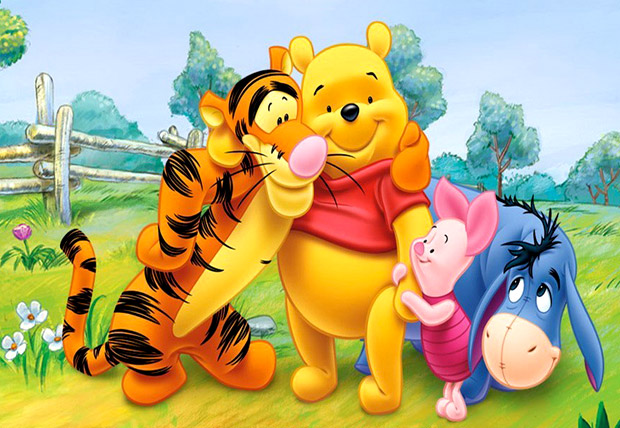
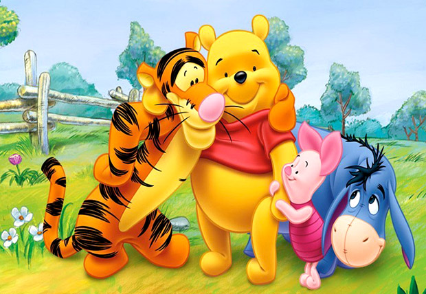

Series infantiles favoritas
| Ilustración | Año de emisión | Personaje favorito |
|---|---|---|
|  | 1977 | Pooh |
 |
2012 | Mabel |
| 2018 | Bingo |
| Ilustración | Año de emisión | Personaje favorito |
|---|---|---|
|  | 1977 | Pooh |
|
2012 | Mabel |
| 2018 | Bingo |
| Grupo | Empresa | Debut | Canción con que las conocí | Canción favorita | Integrante favorito |
|---|---|---|---|---|---|
| Twice | JYP | 2015 | Cheer up | Fancy | Jihyo |
| G(i)dle | Cube | 2018 | Señorita | Queencard | Soyeon |
| Red Velvet | SM | 2014 | Red flavor | Psycho | Wendy |
| Grupo | Empresa | Debut | Canción con que las conocí | Canción favorita | Integrante favorito |
|---|---|---|---|---|---|
| Exo | SM | 2011 | Universe | Gravity | Kai |
| Taemin | SM | 2008 | Fantasy | Move | Taemin |
| Got7 | JYP | 2014 | Just right | Lullubay | Jackson |